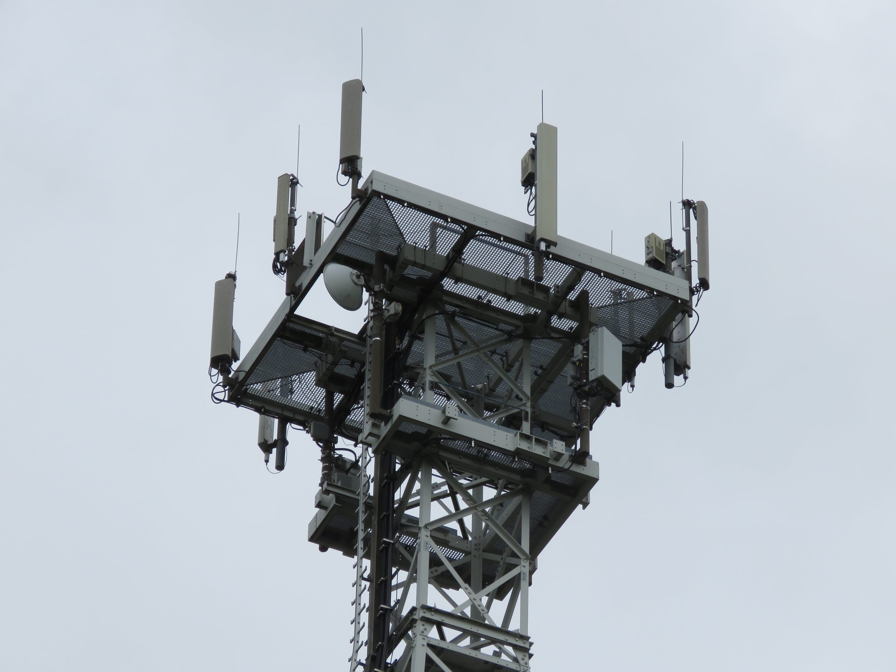

La pesadilla vivir en el centro de una teoría conspiranoica que te sitúe en el origen del coronavirus en Wuhan
El pasado octubre, dos eventos coincidían en la ciudad de Wuhan, en el epicentro de la pandemia de coronavirus que desde entonces tiene en vilo al mundo.Al tiempo que empezaban a aflorar los primeros casos de la ahora conocida como COVID-19, se celebraba la séptima edición de los Juegos Mundiales Militares.
Esta suerte de Olímipicos para los alistados en las fuerzas armadas de hasta 110 naciones, o Juegos de la Paz, recibieron a más de 9.300 competidores en su última edición y ven en el deporte «un eficaz habilitador diplomático».No parece ser el caso para Maatje Benassi, una ciclista estadounidense y reservista de la Armada de EE.UU., que se ha situado en el centro de una teoría conspiranoica que la sitúa en el origen del coronavirus de Wuhan.
Una casualidad como otra cualquiera, pero que al calor del cruce de acusaciones entre los gobiernos estadounidense y chino sobre el origen del SARS-CoV-2, ha bastado para poner a Maatje y a su marido Matt en el punto de mira de internet.Tal y como cuenta
CNN , lo que comenzó, el pasado marzo, como una teoría más a manos de viejos conocidos de las teorías conspiranoicas que inundan la web a acabado siendo una completa pesadilla para la pareja estadounidense.
Maatje Benassi participó en la prueba de ciclismo femenino y, a pesar de una caída, terminó la prueba en Wuhan el mismo mes que los primeros casos se detectaron.Hoy basta con introducir su nombre en un buscador para encontrar decenas publicaciones que la sitúan como la paciente cero del coronavirus en Wuhan.Uno de los canales con más repercusión es el de George Webb, un
youtuber de 59 años y autoproclamado periodista de investigación que **relaciona a Benny Benassi –el creador de
Satisfaction , el
hit de 2002– con esta mujer norteamericana y la infección por COVID-19.
Por supuesto, el DJ lo niega.Él, italiano y de 53 años de edad, niega haberse contagiado de COVID-19, o al menos haber padecido alguno de los síntomas de esta enfermedad.Webb afirma, en uno de sus vídeos sobre este tema y según cuenta
CNN , que el músico es holandés, frente a sus cerca de 100.000 suscriptores.
A raíz de que la teoría fuera cogiendo cierta inercia en la red, donde llegó a citarse en medios controlados por el estado chino como Global Times, la familia Benassi afirma que han recibido todo un aluvión de críticas e incluso amenazas online, donde algunos de los comentarios proponen incluso ejecutarles.
Mientras tanto, la pareja afirma que se siente totalmente desamparada y que, a pesar de su puesto en la las Fuerzas Armadas, no cuentan con medios para defenderse de este tipo de amenazas.De hecho, en la propia policía les indican que el siguiente paso sería contratar un abogado privado, a través del cual tomar medidas contra Webb.Esto supondría una gran inversión para ellos.
Bajo la petición de pruebas concretas y específicas que respalden la teoría de Webb que conecta a Maatje, su marido y a Benny en el origen del coronavirus, Webb no presenta ninguna, salvo apuntar a «evidencias circunstanciales» y a una fuente en un hospital donde supuestamente y según él mismo trabajaría Maatje.YouTube, por su parte, afirma haberle retirado en el pasado la monetización a Webb, que ha reconocido llegar a ganar del orden de unos cientos de dólares al mes con este tipo de contenido.
No es la primera vez que una teoría sin ningún tipo de prueba fehaciente busca una misteriosa causa al coronavirus.A comienzos de mes, comenzaron a aparecer en llamas algunas antenas de cobertura 5G, como supuesto agente propagante del virus.
Posted On: 2021-03-10T00:00:00
Posted By: David Ortiz

Content Date: 2021-03-10
Download Date: 2021-04-21
Document ID: L0C04AP98